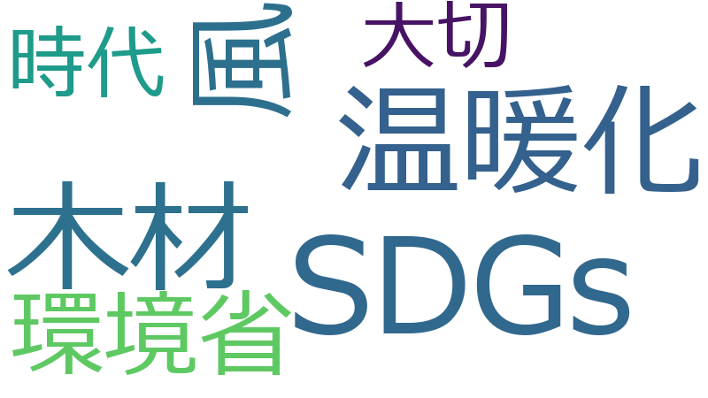

SDGs 、時代 、温暖化 、大切 、木材 、環境省 、風 、CO 、おやじ 、シベリア 、世界 、材 、洋上風力 、補助金 、オゾン 、オゾン層 、ホール 、凍土 、地元 、地球 、年代 、役所 、東京電力 、氷 、永久 、研究 、稚内 、車
SDGs 、おやじ 、シベリア 、温暖化 、オゾン層 、木材 、凍土 、風 、稚内 、オゾン 、洋上風力 、ホール 、CO 、材 、氷 、環境省 、時代 、永久 、大切 、東京電力 、地球 、補助金 、役所 、年代 、車 、世界 、地元 、研究